Module 4: Artificial Intelligence
Part 1 · What AI is, and how machines learn
COMP 150-003 · Fall 2026 · Prof. Allan Miller
AI this month (October 2026)
Oct 27 · Google DeepMind
Genie 4 generates interactive worlds with sound, steered by typing (trusted testers only).
Oct 26 · Anthropic
Files to go public. Its filing says four AI models reached real systems during testing.
2026 so far
About one major new AI model every 6 days.

By the end of Part 2 you'll know how every one of these works.
blog.google (Oct 27, 2026) · Reuters/CNBC (Oct 26) · The Verge (Sep 29) · release timelines
Where AI fits
- AI is the big umbrella: any machine doing "thinking" tasks, including hand-written rules and search (Deep Blue).
- Machine learning: AI that learns its rules from data.
- Deep learning: machine learning with many-layer neural networks.
- LLMs (ChatGPT, Claude, Gemini): deep learning trained on text.
- And it all runs on bits (Module 1), programs (Module 2) and logic gates (Module 3).
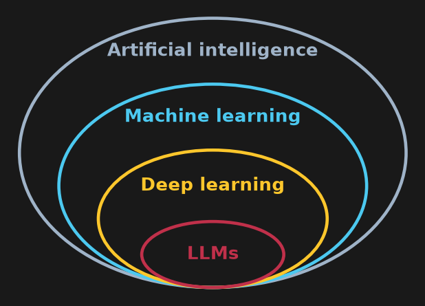
What is AI?
Where the name came from
- There is still no single agreed definition of AI.
- The phrase first appears in a funding proposal dated Aug 31, 1955: four scientists asked for $13,500 for a "2 month, 10 man study of artificial intelligence" at Dartmouth.
- A working definition: a machine that can sense, decide, and act, and get better at deciding.
- The big question since the start: can machines think?

Dartmouth proposal, Aug 31, 1955 · Photo: "null0", CC BY-SA 2.0, Wikimedia Commons
The Turing test (1950)
- Alan Turing, "Computing Machinery and Intelligence" (Mind, Oct 1950).
- Instead of "can machines think?", he asked: can a judge tell the machine from a human in conversation?
judge⇄hidden humanhidden machine
It tests behavior, not what's going on inside. Turing predicted machines would fool judges about 30% of the time "in about fifty years."
Turing, Mind 59:433 (1950) · Photo: Possibly Arthur Reginald Chaffin (1893-1954), Public domain, Wikimedia Commons
2025: chatbots pass a Turing test
- UC San Diego, 2025: judges chatted with a human and an AI at the same time for 5 minutes, then picked the human.
- GPT-4.5, told to act like a person, was picked as the human 73% of the time: more often than the real humans!
💬 If an AI passes, does that mean it thinks? What does the test actually measure?
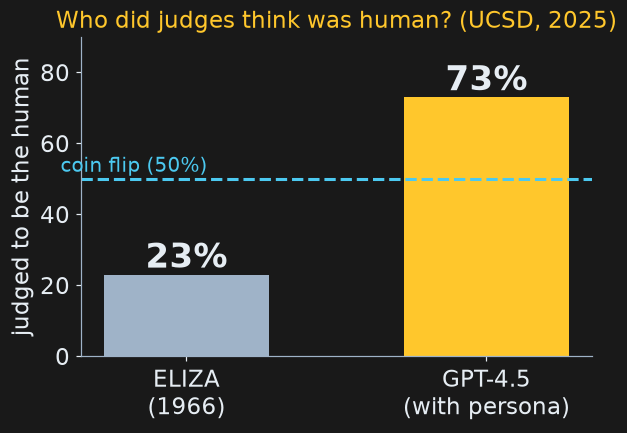
Jones & Bergen, arXiv 2503.23674 (Mar 2025)
Four ways to define "intelligent"
| like a human | rationally (ideally) | |
|---|---|---|
| thinking | 🧠 cognitive modeling: think the way people think | 🧮 logic: reason correctly |
| acting | 🗣️ the Turing test: behave the way people behave | 🎯 rational agents: do whatever best achieves the goal |
Russell & Norvig's textbook framework. People aren't always rational, so "like a human" and "rational" are different targets. Most AI today aims at the bottom-right box: agents.
Russell & Norvig, Artificial Intelligence: A Modern Approach
Narrow, general, super
Narrow AI
one kind of task: chess, spam filtering, face unlock
everything deployed started here
one kind of task: chess, spam filtering, face unlock
everything deployed started here
→
General AI (AGI)
matches people across most thinking tasks
labs say it's their goal; how close is hotly debated
matches people across most thinking tasks
labs say it's their goal; how close is hotly debated
→
Superintelligence (ASI)
exceeds the best humans at nearly everything
your Current Events paper
exceeds the best humans at nearly everything
your Current Events paper
💬 Is a chatbot that writes code, essays and poems "narrow"? Where on this line would you put it?
Two ways to build AI
Rules or learning?
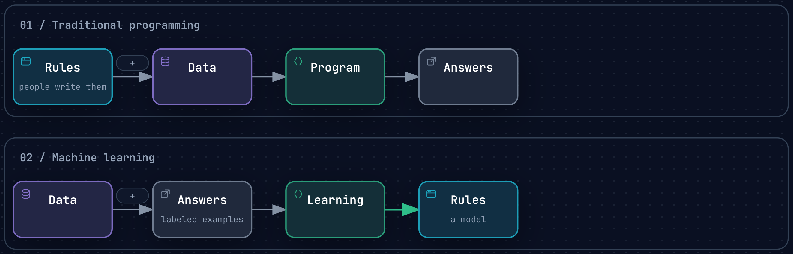
- Rules: people write them. MYCIN (1970s) diagnosed blood infections with about 450 hand-written rules.
- Learning: give the computer examples with the answers, and it works out the rules. Every modern chatbot is built this way.
Exercise 1
Exercise 1
This spam filter uses hand-written rules. For each message, predict: True (spam) or False?
def is_spam(msg):
msg = msg.lower()
return "free" in msg or "winner" in msg or "$$$" in msg- "You are a WINNER! Claim now"
- "Free pizza in the lobby at 6"
- "C1aim your pr1ze t0day"
- "Meeting moved to 3pm"
⏱ 3 minutes
message
↓
contains "free", "winner" or "$$$"?
↓
yes → spam · no → not spam
Exercise 1: solution
msgs = ["You are a WINNER! Claim now", "Free pizza in the lobby at 6",
"C1aim your pr1ze t0day", "Meeting moved to 3pm"]
for m in msgs:
print(f"{is_spam(m)!s:5} {m}")True You are a WINNER! Claim now True Free pizza in the lobby at 6 False C1aim your pr1ze t0day False Meeting moved to 3pm
| really spam | really OK | |
|---|---|---|
| flagged spam | ✅ #1 | ❌ #2 false alarm |
| let through | ❌ #3 missed | ✅ #4 |
Spammers misspell on purpose; every trick needs a new rule. Learning from examples scales better.
A short history
80 years in one picture
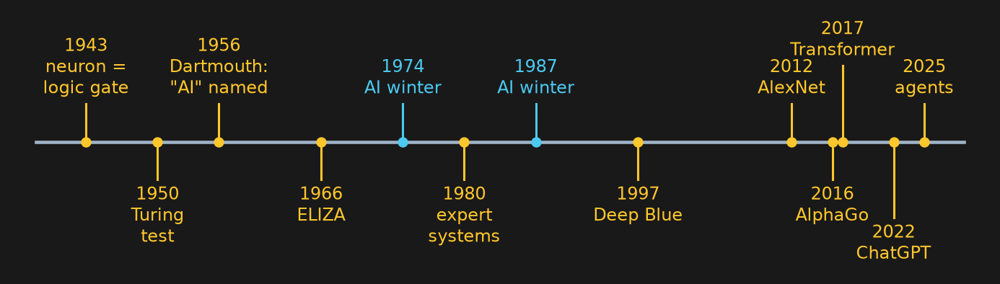
- The field has swung between rules (logic, expert systems) and learning (neural networks).
- Each wave of hype was followed by an "AI winter" when promises outran results and funding dried up.
- Local hook: the 1943 paper modeling neurons as on/off logic gates (Module 3!) came partly from the University of Chicago.
Dossier 01: McCulloch & Pitts (1943); Dartmouth (1955); Lighthill report (1972)
The first learning machines
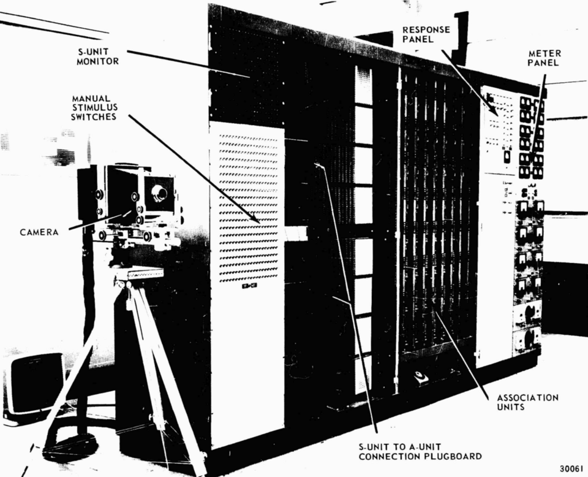
- 1958: the perceptron, a 5-ton IBM 704, learned to tell left-side marks from right-side marks after 50 tries.
- It learned by adjusting weights, the same basic idea inside every neural network today.
- 1966: ELIZA, the first chatbot, faked understanding with pattern matching ("Tell me more about your mother").

Cornell Chronicle (2019); Weizenbaum, CACM (1966) · Photo: John C. Hay, Albert E. Murray, Public domain, Wikimedia Commons · Photo: Unknown authorUnknown author, Public domain, Wikimedia Commons
Machines win board games
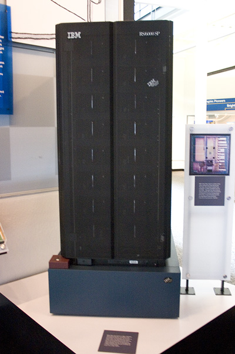
1997: beats chess champion Kasparov 3.5–2.5 by checking 200 million positions per second: brute-force search, not learning.
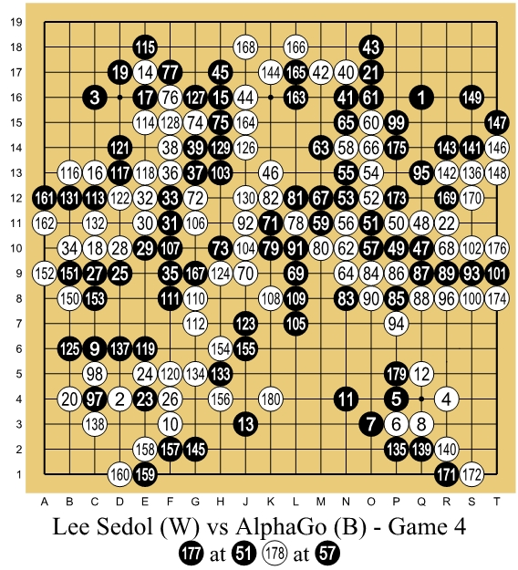
2016: AlphaGo beats Lee Sedol (winner of 18 world titles) 4–1 at Go. Its "Move 37" had a 1-in-10,000 chance of being played by a human. AlphaGo learned, partly by playing itself.
IBM; DeepMind; Wired (Mar 2016) · Photo: James the photographer, CC BY 2.0, Wikimedia Commons · Photo: Wesalius, CC BY-SA 4.0, Wikimedia Commons
Machines win video games: OpenAI Five
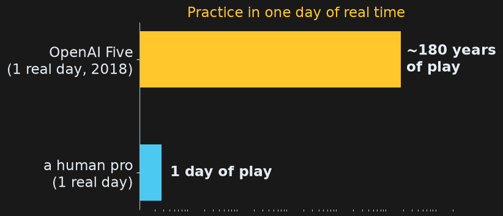
- OpenAI Five played Dota 2: five bots against five humans, a hidden map, about 20,000 moves a game (chess: about 40).
- Pure reinforcement learning: it played itself, rewarded for kills and towers. No human games to copy.
- In 2018 it practiced about 180 years of games every day.
- April 2019: beat world champions OG 2–0, then won 99.4% of 42,729 public games.
OpenAI (Jun 2018); The Verge & VentureBeat (Apr 2019); Wikipedia: OpenAI Five
Machines win video games: Mario
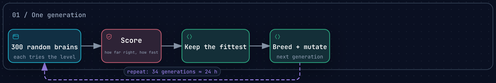
- MarI/O (YouTuber SethBling, 2015) taught itself Super Mario World. Its only goal: go right, fast.
- After 34 generations (about 24 hours) it beat a level by spin-jumping straight through, skipping every power-up.
- AI-learned Mario speedruns are now a YouTube genre: the machine finds routes people never tried, and sometimes glitches.
💬 If the reward is "go right fast," the AI ignores everything else. What could go wrong when we reward real AI agents?
Wikipedia: SethBling (MarI/O, Jun 2015)
2012: deep learning takes off
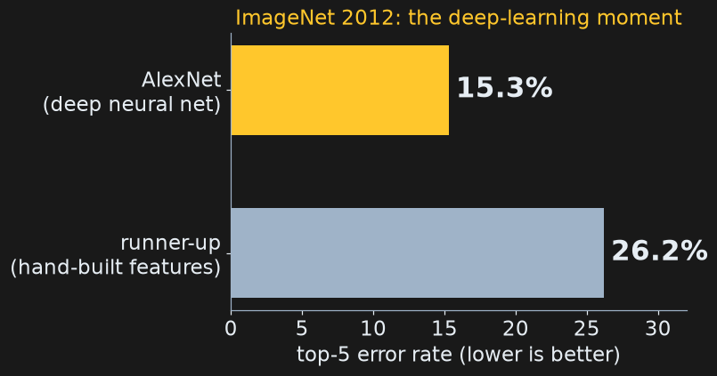
- ImageNet: a contest to label photos into 1,000 categories.
- AlexNet, a deep neural network, cut the error rate to 15.3%; the next-best team had 26.2%.
- It trained on 2 gaming graphics cards for about a week. GPUs became the engine of AI, and Nvidia one of the most valuable companies on Earth.
ILSVRC-2012 results (image-net.org)
What is a neural network?
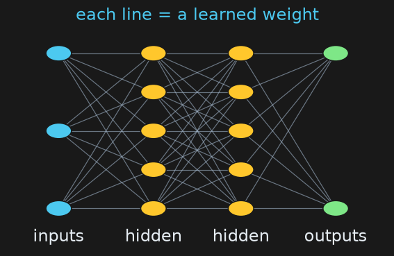
- Numbers go in on the left, pass through layers of simple units, and an answer comes out on the right.
- Each line has a weight (a number). Learning = adjusting the weights until the outputs match the examples.
- Deep = many layers. GPT-3 had 175 billion weights.
2017–2024: the language-model era
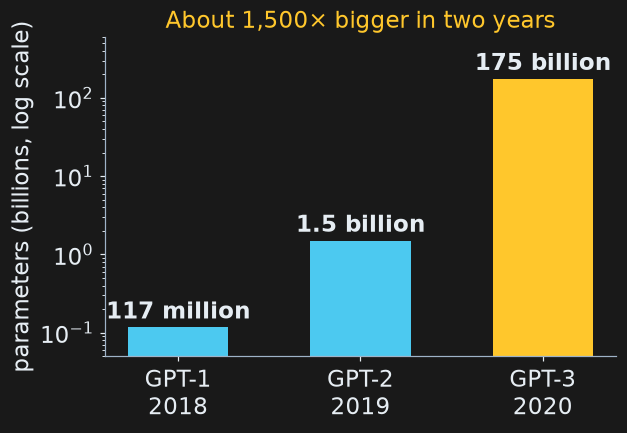
| when | what |
|---|---|
| 2017 | The Transformer ("the T in ChatGPT") |
| 2020 | AlphaFold 2 predicts protein shapes |
| Nov 30, 2022 | ChatGPT: 1 million users in 5 days |
| 2023 | GPT-4, Claude, Gemini, open-weight Llama |
| Sep 2024 | Reasoning models (OpenAI o1) |
| Oct 2024 | Nobel Prizes for neural networks (Physics) and AlphaFold (Chemistry) |
arXiv 1706.03762; OpenAI papers; DeepMind; Altman (Dec 5, 2022); nobelprize.org
2025–2026: the pace picks up
| when | what |
|---|---|
| Jan 2025 | DeepSeek R1, a free open-weight model from China. Nvidia loses ~$589 billion in one day. |
| Jul 2025 | AI reaches gold-medal level at the International Math Olympiad |
| 2025–26 | Agents: AI that takes actions, not just chats |
| 2026 | GPT-6, Claude 5.5, Gemini 3.8/4, Kimi K3 (2.8 trillion parameters) |

💬 Which of these would someone in 2014 have believed? (Hold that thought for Part 2.)
Reuters (Jan 27, 2025); DeepMind & Reuters (Jul 2025); lab announcements · Photo: SharnKB, CC BY 4.0, Wikimedia Commons
How machines learn
Machine learning is a loop
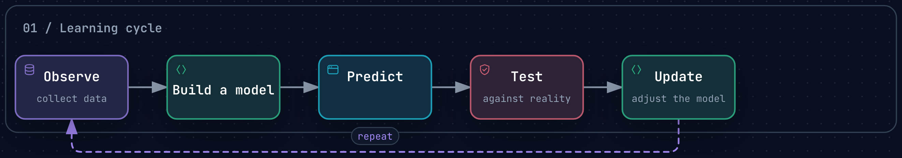
- Input: data (examples, often with the right answers). Output: a model, a function that predicts.
- Three things a model can do with examples: memorize them, average them, or generalize to cases it has never seen.
Three kinds of learning
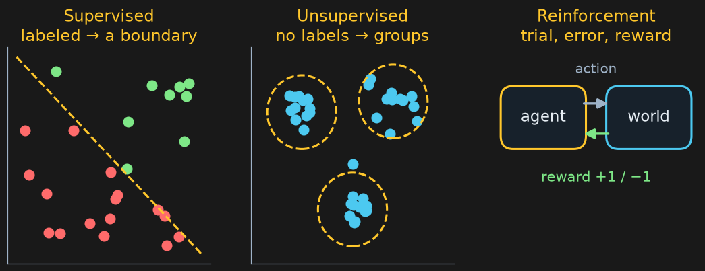
| example | |
|---|---|
| Supervised | thousands of emails marked spam / not spam → a spam filter |
| Unsupervised | group shoppers into clusters nobody named in advance |
| Reinforcement | AlphaGo playing itself; chatbots rewarded for correct math answers |
Nearest neighbors: learning by similarity
- To classify something new, find the k most similar examples and let them vote.
- Supervised: every example has a label.
- Past students:
(hours studied, hours slept, result).
data = [(1, 4, "fail"), (2, 8, "fail"), (3, 5, "fail"), (4, 7, "pass"),
(5, 4, "fail"), (6, 8, "pass"), (7, 6, "pass"), (8, 5, "pass")]Distance = difference in study hours + difference in sleep hours.
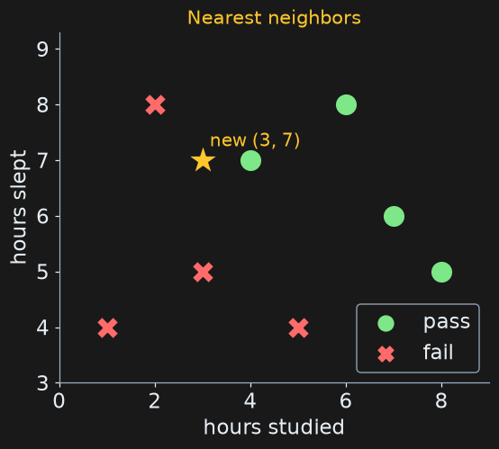
The algorithm
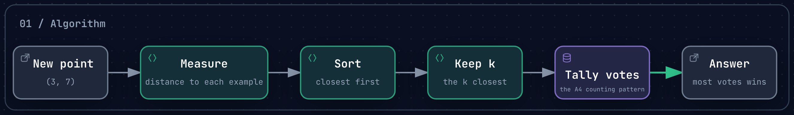
def distance(a, b):
return abs(a[0] - b[0]) + abs(a[1] - b[1])
def predict(new, data, k):
ranked = sorted(data, key=lambda row: distance(new, row)) # sort by distance
votes = {}
for row in ranked[:k]: # keep the k closest
votes[row[2]] = votes.get(row[2], 0) + 1 # tally: the A4 counting pattern!
return max(votes, key=votes.get) # most votes winsExercise 2
Exercise 2
A new student studied 3 hours and slept 7 hours:
(3, 7).- Fill in the distance from (3, 7) to each student.
- Which student is nearest? What does k = 1 predict?
- Which 3 are nearest? What does k = 3 predict?
| student | (1,4) | (2,8) | (3,5) | (4,7) | (5,4) | (6,8) | (7,6) | (8,5) |
|---|---|---|---|---|---|---|---|---|
| label | fail | fail | fail | pass | fail | pass | pass | pass |
| distance |
⏱ 5 minutes
Exercise 2: solution
| student | (1,4) | (2,8) | (3,5) | (4,7) | (5,4) | (6,8) | (7,6) | (8,5) |
|---|---|---|---|---|---|---|---|---|
| label | fail | fail | fail | pass | fail | pass | pass | pass |
| distance | 2+3 = 5 | 1+1 = 2 | 0+2 = 2 | 1+0 = 1 | 2+3 = 5 | 3+1 = 4 | 4+1 = 5 | 5+2 = 7 |
- k = 1: nearest is (4,7), distance 1 → pass.
- k = 3: (4,7) pass, (2,8) fail, (3,5) fail → fail, 2 votes to 1.
- Same data, same student, different answers: choosing k is a design decision.
print(f"k=1: {predict((3, 7), data, 1)}")
print(f"k=3: {predict((3, 7), data, 3)}")k=1: pass k=3: fail
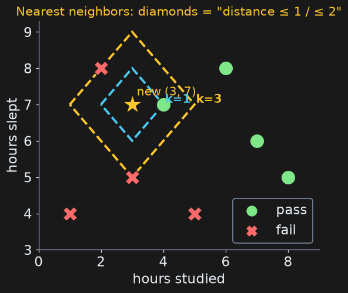
Training data vs. test data
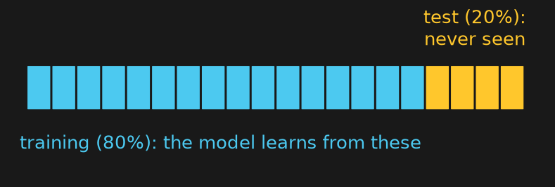
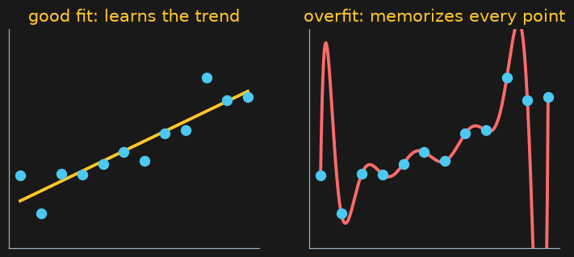
- A model that memorizes its examples can look perfect, then fail on anything new: overfitting.
- So we hold data back and test on examples the model has never seen.
- Accuracy = correct test predictions ÷ test-set size.
- Final project extra credit: "evaluated on held-out data" means exactly this.
Wrap-up
- AI has no single definition; the Turing test measures behavior, and chatbots now pass it.
- Two approaches: rules written by people, or patterns learned from data.
- A model is a function learned from examples; test it on data it hasn't seen.
Next time: what happens when the "examples" are most of the text on the internet, and the prediction is the next word?